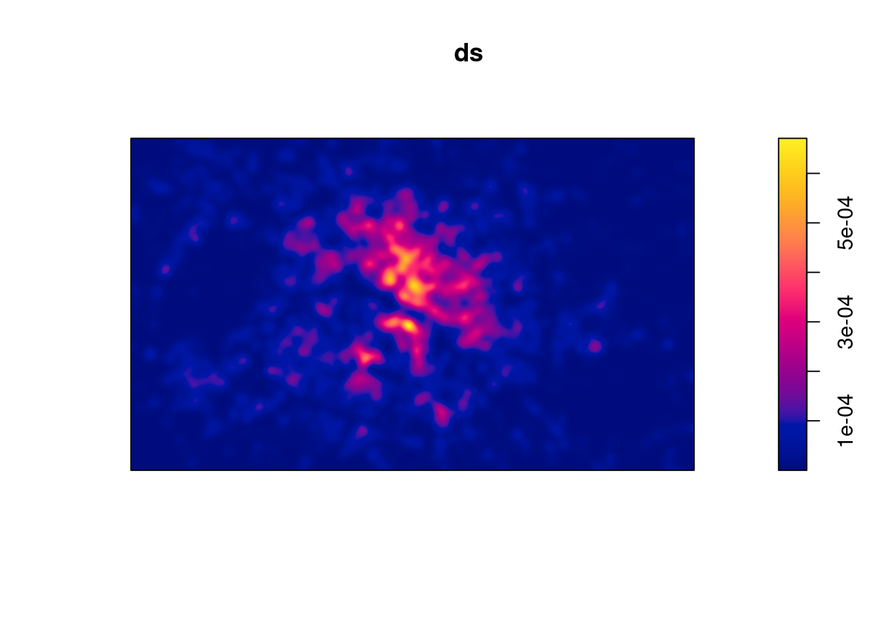

# install.packages("sf")
# install.packages("mapsf")
# install.packages("mapview")
# install.packages("maptiles")
# install.packages("osrm")
# install.packages("tidygeocoder")
# install.packages("spatstat")
# install.packages("osmdata")
# install.packages("terra")
# install.packages("DT")
library(sf)
library(maptiles)
library(osmdata)
library(tidygeocoder)
library(spatstat)
library(mapsf)
library(mapview)
library(terra)
library(osrm)
library(mapiso)
library(DT)Traitement de l’IG avec R
Un exemple de chaîne de traitement
Hugues Pecout ![]()
Timothée Giraud
Introduction
Ceci est un document computationnel (notebook quarto) qui permet par exemple de mettre en page une chaîne de traitement. La mise en forme du texte se fait en langage markdown.
Librairies utilisées
Import de données
Données stockées en local
Liste des couches géographiques d’un fichier GeoPackage.
st_layers("data/TAIS_workshop.gpkg")Driver: GPKG
Available layers:
layer_name geometry_type features fields crs_name
1 paris Multi Polygon 20 7 RGF93 v1 / Lambert-93
2 commune Multi Polygon 91 19 RGF93 v1 / Lambert-93
3 troncon_routier Line String 47757 25 RGF93 v1 / Lambert-93
4 voie_ferree Line String 2575 9 RGF93 v1 / Lambert-93
5 surface_hydro Multi Polygon 107 14 RGF93 v1 / Lambert-93
6 restaurant_osm Point 10193 110 RGF93 v1 / Lambert-93
7 etab_esr Point 2 2 RGF93 v1 / Lambert-93
8 grid500m_paris 487 2 RGF93 v1 / Lambert-93
Import des données géographiques en objet sf.
commune <- st_read(dsn = "data/TAIS_workshop.gpkg", layer = "commune", quiet = TRUE)
paris <- st_read(dsn = "data/TAIS_workshop.gpkg", layer = "paris", quiet = TRUE)
road <-st_read(dsn = "data/TAIS_workshop.gpkg", layer = "troncon_routier", quiet = TRUE)
railway <-st_read(dsn = "data/TAIS_workshop.gpkg", layer = "voie_ferree", quiet = TRUE)
water <-st_read(dsn = "data/TAIS_workshop.gpkg", layer = "surface_hydro", quiet = TRUE)
Affichage des couches importées.
mf_map(paris, col = "grey90", border = NA)
mf_map(railway, col = "#3d3d3d30", add = TRUE)
mf_map(road, col = "#c1bfbf40", add = TRUE)
mf_map(water, col = "#3d8ed260", border = "#3d8ed260", add = TRUE)
mf_map(commune, border = "grey50", cex = 0.2, col = NA, add = TRUE)
Données OpenStreetMap
Calcul d’une emprise (Paris + 1000m).
emprise <- paris |>
st_transform(crs = "EPSG:4326")|>
st_buffer(dist = 1000) |>
st_bbox()
Extraction d’une tuile OSM
Extraction de tuiles (fond de carte) OpenStreetMap avec le package maptiles.
tiles <- get_tiles(x = emprise,
project = FALSE,
crop = TRUE,
zoom = 13,
cachedir = "cache")
# Affichage d'une tuile raster
mf_raster(tiles)
Extraction de données vectorielles OSM
Extraction de données OpenStreetMap avec le package osmdata.
# Définition d'une bounding box (emprise Paris)
q <- opq(bbox = emprise, osm_types = "node")
# Extraction des restaurants
req <- add_osm_feature(opq = q, key = 'amenity', value = "restaurant")
res <- osmdata_sf(req)
resto <- res$osm_points
# Re-projection
resto <- st_transform(resto , crs = "EPSG:3857")
# Affichage
mf_raster(tiles)
mf_map(resto, cex= 0.2, add = TRUE)
Géocodage d’adresse
Géocodage d’une adresse avec le package tidygeocoder.
# Construction d'un data.frame contenant des adresses
etab <- data.frame(nom = c("EHESS", "SciencePo"),
rue = c("54 boulevard Raspail, 75006 Paris, France",
"27 rue Saint-Guillaume, 75007 Paris, France"))
# Géocodage (BD Nominatim - OSM)
etab_geo <- geocode(.tbl = etab, address = "rue", quiet = TRUE)
Affichage interactif de la table récupérée.
datatable(etab_geo)
Conversion du tableau en couche géographique (objet sf) à partir des latitudes et longitudes stockées.
# Transformation du tableau en objet sf
etab_sf <- st_as_sf(etab_geo , coords = c("long", "lat"), crs = 'EPSG:4326')
# Affichage interactif
mapview(etab_sf)
Affichage de données
Contrôle de la projection et modification.
# Affichage des informations d'un objet sf
st_crs(resto)Coordinate Reference System:
User input: EPSG:3857
wkt:
PROJCRS["WGS 84 / Pseudo-Mercator",
BASEGEOGCRS["WGS 84",
ENSEMBLE["World Geodetic System 1984 ensemble",
MEMBER["World Geodetic System 1984 (Transit)"],
MEMBER["World Geodetic System 1984 (G730)"],
MEMBER["World Geodetic System 1984 (G873)"],
MEMBER["World Geodetic System 1984 (G1150)"],
MEMBER["World Geodetic System 1984 (G1674)"],
MEMBER["World Geodetic System 1984 (G1762)"],
MEMBER["World Geodetic System 1984 (G2139)"],
ELLIPSOID["WGS 84",6378137,298.257223563,
LENGTHUNIT["metre",1]],
ENSEMBLEACCURACY[2.0]],
PRIMEM["Greenwich",0,
ANGLEUNIT["degree",0.0174532925199433]],
ID["EPSG",4326]],
CONVERSION["Popular Visualisation Pseudo-Mercator",
METHOD["Popular Visualisation Pseudo Mercator",
ID["EPSG",1024]],
PARAMETER["Latitude of natural origin",0,
ANGLEUNIT["degree",0.0174532925199433],
ID["EPSG",8801]],
PARAMETER["Longitude of natural origin",0,
ANGLEUNIT["degree",0.0174532925199433],
ID["EPSG",8802]],
PARAMETER["False easting",0,
LENGTHUNIT["metre",1],
ID["EPSG",8806]],
PARAMETER["False northing",0,
LENGTHUNIT["metre",1],
ID["EPSG",8807]]],
CS[Cartesian,2],
AXIS["easting (X)",east,
ORDER[1],
LENGTHUNIT["metre",1]],
AXIS["northing (Y)",north,
ORDER[2],
LENGTHUNIT["metre",1]],
USAGE[
SCOPE["Web mapping and visualisation."],
AREA["World between 85.06°S and 85.06°N."],
BBOX[-85.06,-180,85.06,180]],
ID["EPSG",3857]]# Re-projection
tiles_2154 <- project(x = tiles, y = "EPSG:2154")
resto_2154 <- st_transform(resto , crs = "EPSG:2154")
etab_2154 <- st_transform(etab_sf , crs = "EPSG:2154")
Affichage des données.
mf_raster(tiles_2154)
mf_map(railway, col = "#3d3d3d30", add= TRUE)
mf_map(road, col = "#c1bfbf40", add= TRUE)
mf_map(water, col = "#3d8ed260", border = "#3d8ed260", add= TRUE)
mf_map(resto_2154, col = "red3", cex= 0.17, add= TRUE)
mf_map(etab_2154, col = "black", cex=1.2, pch = 15, add= TRUE)
mf_map(commune, border = "grey50", cex = 0.2, col = NA, add= TRUE)
Exploration I - Répartition
Restaurants à proximité
Calcul du nombre de restaurants dans une zone de 500m autour de l’EHESS.
# Calcul d'un buffer de 500m
EHESS_buff500m <- st_buffer(etab_2154[1,], 500)
# Intersection entre les restaurants et le buffer de 500m
inters_resto_buff <- st_intersection(resto_2154, EHESS_buff500m)
# Nombre de restaurants dans un rayon de 500m ?
nrow(inters_resto_buff)[1] 71
Densité grille régulière
Représentation de la densité des restaurants dans une grille régulière.
# Création d'une grille régulière (500m de coté) sur Paris
grid <- st_make_grid(paris, cellsize = 500, square = TRUE)
# Transformation de la grille (sfc) en obejt sf
grid <- st_sf(ID = 1:length(grid), geometry = grid)
# Affichage de la grille
mf_map(paris)
mf_map(grid, col = NA, add = TRUE)# Récuperation du carreau d'appartenance de chaque restaurants
grid_resto <- st_intersects(grid, resto_2154, sparse = TRUE)
# Comptage du nombre de restaurants dans chacun des carreaux
grid$nb_resto <- sapply(grid_resto, FUN = length)
# Découpage de la grille par les limites de Paris
grid_paris <- st_intersection(grid, st_union(paris))Warning: attribute variables are assumed to be spatially constant throughout
all geometries# Affichage de la grille
mf_map(grid_paris, col = NA)
Enregistrement de la grille vectorielle dans un fichier geopackage.
# Enregistrement de la grille sur sa machine dans le fichier geopackage
st_write(obj = grid_paris,
dsn = "data/TAIS_workshop.gpkg",
layer = "grid500m_paris",
delete_layer = TRUE)
Cartographie thématique
- Carte choroplèthe (aplat de couleur).
mf_raster(tiles_2154)
mf_map(grid_paris,
var = "nb_resto",
type = "choro",
breaks = "jenks",
border = "white",
pal = "Teal",
alpha = .8,
leg_pos = "topright",
leg_val_rnd = 1,
leg_title = paste0("Nombre de restaurants\n",
"Carroyage de 500m\n"), add = TRUE)
- Carte en symbole proportionnel.
mf_raster(tiles_2154)
mf_map(grid_paris, add = TRUE, col = NA)
mf_map(grid_paris,
var = "nb_resto",
type = "prop",
border = "white",
inches = 0.1,
leg_pos = "topright",
leg_title = paste0("Nombre de restaurants\n",
"Carroyage de 500m\n"), add = TRUE)88 '0' values are not plotted on the map.
- Carte combinée stock et ratio (symbole proportionnel + aplat de couleur).
mf_raster(tiles_2154)
mf_map(grid_paris, add = TRUE, col = NA)
mf_map(grid_paris,
var = c("nb_resto", "nb_resto"),
type = "prop_choro",
pal = "Teal",
breaks = "quantile",
border = "white",
inches = 0.1,
leg_pos = "topright",
leg_title = paste0("Nombre de restaurants\n",
"Carroyage de 500m\n"), add = TRUE)88 '0' values are not plotted on the map.
Densité lissage KDE
Construction d’un objet ppp (spatstat) à partir du semi de point.
# Construction d'un objet ppp (spatstat) à partir du semi de point
p <- as.ppp(X = st_coordinates(resto_2154),
W = as.owin(st_bbox(resto_2154)))
# Calcul densité par lissage
ds <- density.ppp(x = p, sigma = 150, eps = 10, positive = TRUE)
# Affichage du résultat
plot(ds)
# Calcul densité de restaurants par hectare
r <- rast(ds) * 100 * 100
# Ajout d'une projection
crs(r) <- st_crs(resto_2154)$wkt
# Affichage
plot(r)
Conversion du raster en polygone par plage de valeur.
# Création d'un vecteur contenant les bornes de classe
maxval <- max(values(r))
bks <- c(seq(0, floor(maxval), 1), maxval)
# Transformation du raster en polygones à partir de la discrétisation choisie
iso_dens <- mapiso(r, breaks = bks)
# Suppression de la première classe ([0, 1[) ou le nb de retsaurant < 1
iso_dens <- iso_dens[-1, ]
# Affichage simple du résultat
mf_raster(tiles_2154)
mf_map(iso_dens,
var = "isomin",
type = "choro",
breaks = bks[-1],
border = "white",
lwd = 0.1,
pal = "Teal",
alpha = .6,
leg_pos = "topright",
leg_val_rnd = 1,
leg_title = paste0("Densité de restaurants\n",
"par hectare, dans un\n",
"voisinage gaussien\n",
"(σ = 150m)"), add = TRUE)
Cartographie avancée du résultat.
mf_map(paris, col = "grey90", border = NA)
mf_map(railway, col = "#3d3d3d30", add = TRUE)
mf_map(road, col = "#c1bfbf40", add = TRUE)
mf_map(water, col = "#3d8ed260", border = "#3d8ed260", add = TRUE)
mf_map(commune, border = "grey40", lwd = 0.2, col = NA, add = TRUE)
mf_map(iso_dens,
var = "isomin",
type = "choro",
breaks = bks[-1],
border = "white",
lwd = 0.1,
pal = "Teal",
alpha = .7,
leg_pos = "topright",
leg_size = 0.8,
leg_frame = TRUE,
leg_box_border = FALSE,
leg_bg = "#FFFFFF99",
leg_val_rnd = 1,
leg_title_cex = 0.6,
leg_title = paste0("Nombre de restaurants\npar hectare, voisinage\n",
"gaussien (σ = 150m)\n"), add = TRUE)
mf_map(etab_2154, col = "black", cex=0.8, pch = 15, add = TRUE)
mf_annotation(x = etab_2154[1,],
txt = "EHESS",
halo = TRUE,
cex = 0.5,pos = "bottomright")
mf_legend(val_cex = 0.6,
title = NA,
size = 0.6,
type = "typo",
val = c("railway", "road", "water"),
pal = c("grey60", "grey75", "steelblue2"),
pos = "topleft")
mf_layout(title = "Densité de restaurants à Paris",
credits = "",
arrow = FALSE,
scale = TRUE)
mf_credits("Auteurs : H. Pecout & T. Giraud\nSources : BD CARTO, IGN 2024 - OpenStreetMap 2024",
cex = 0.5)Exploration II - Accessibilité
Matrices de distance
Comparaison de l’accessibilité aux zones les plus denses en restaurants, depuis l’EHESS et SciencePo. Qui est le mieux placé ?
Distances euclidiennes
# Extraction des zones les plus denses (polygones)
zone_dense <- iso_dens[iso_dens$isomax == max(iso_dens$isomax), ]
# Multipolygones - > plusieurs polygones
zones_denses <- st_cast(zone_dense, "POLYGON")
# Extraction des centroïdes des zones séléctionnées
centres_denses <- st_centroid(zones_denses)
# Calcul matrice de distance euclidienne
mat_dist_eucli <- st_distance(x = etab_2154, y = centres_denses)
rownames(mat_dist_eucli) <- etab_2154$nom
mat_dist_eucliUnits: [m]
[,1] [,2]
EHESS 1359.158 2247.763
SciencePo 1204.536 1851.850
Distances routières
# Calcul de la matrice de distance par la route
mat_dist_road <- osrmTable(src = etab_2154,
dst = centres_denses,
osrm.profile = "car",
measure = c('duration', 'distance'))
Calcul d’itinéraire
Extraction de l’itinéraire (voiture) entre L’EHESS et la zone la plus dense en restaurants (selon OSM).
# Itinéraire EHESS -> zone dense la plus proche
route <- osrmRoute(src = etab_2154[1,],
dst = centres_denses[1,])
Affichage de l’itinéraire récupéré.
# Récupération d'un fond de carte OSM
osm <- get_tiles(st_buffer(route, 500), zoom = 15, crop = TRUE)
# Affichage
mf_theme(mar = c(0,0,1.2,0))
mf_raster(osm)
mf_map(iso_dens,
var = "isomin",
type = "choro",
breaks = bks[-1],
border = "white",
pal = "Teal",
alpha = .5,
leg_pos = NA,
add = TRUE)
# Affichage de l'itinéraire récupéré
mf_map(route, col = "grey10", lwd = 4, add = T)
mf_map(route, col = "grey90", lwd = 0.8, add = T)
# Affichage EHESS
mf_map(etab_2154[1,], col = "red", cex= 2, add = T)
# Ajout d'une annotation
mf_annotation(x = etab_2154[1,],
txt = "EHESS",
halo = TRUE,
cex = 0.8)
# Ajout d'un titre
mf_title("Itinéraire voiture plus plus court vers l'offre de restauration la plus dense")